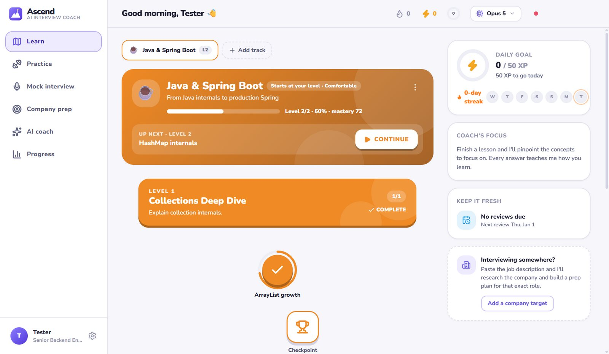
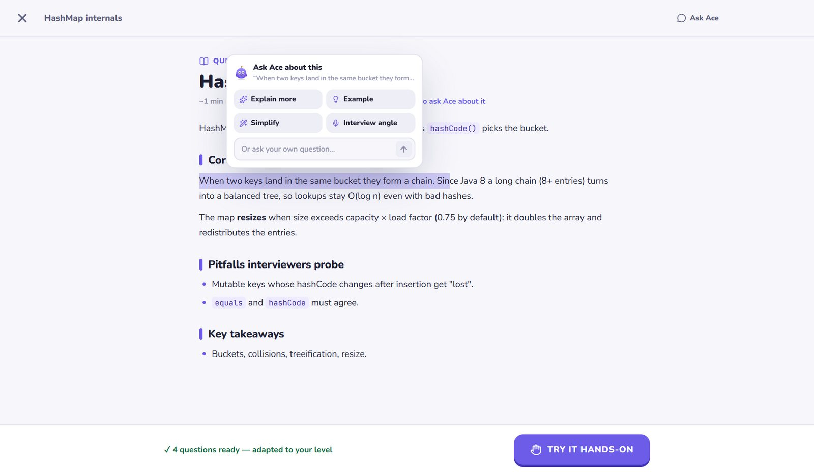
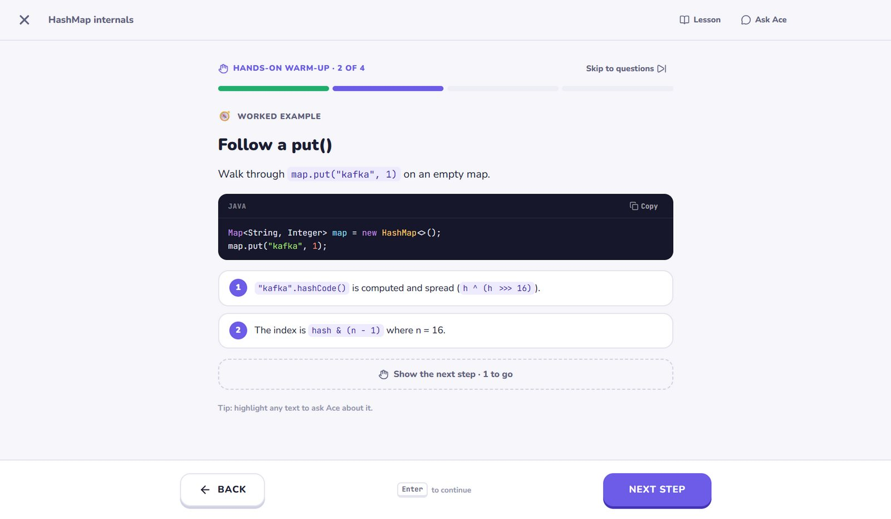
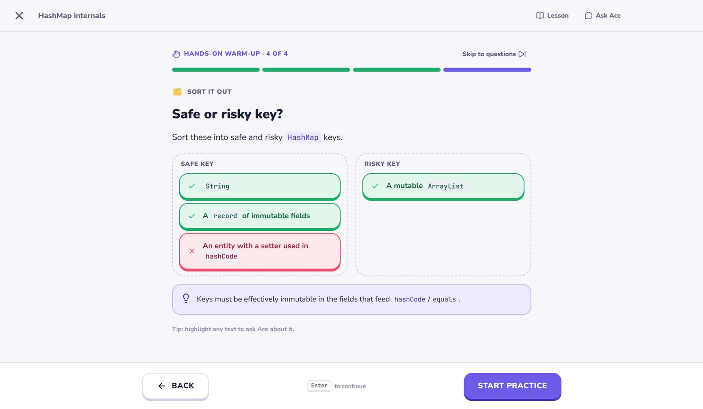
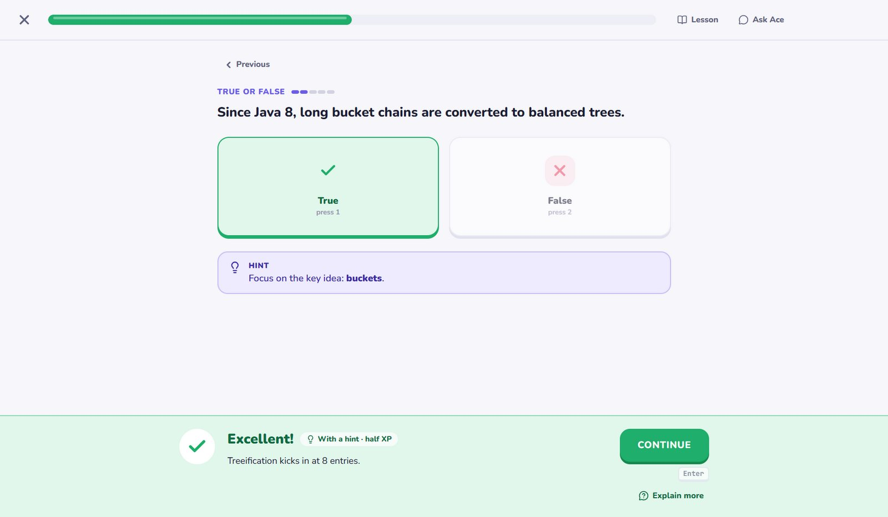
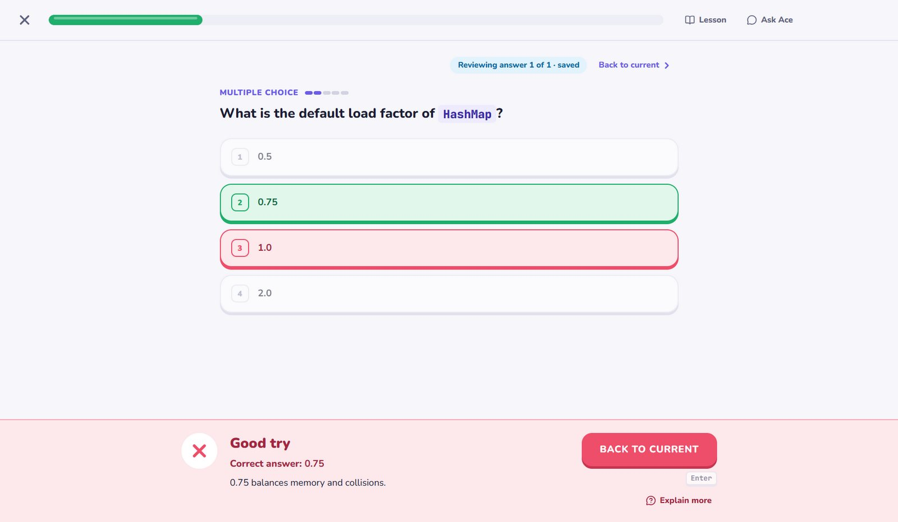
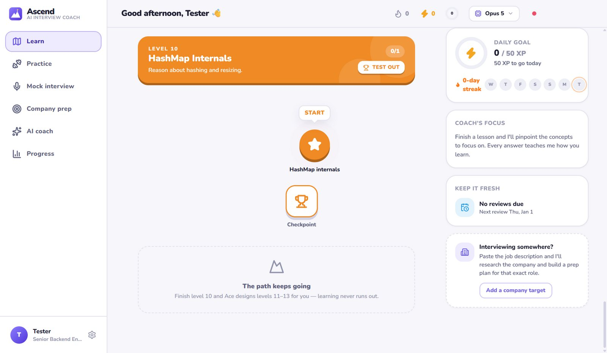

A path that starts at your level
Tell Ace how comfortable you are with a subject and your Level 1 is pitched right there. The next topic is always one click away.
Ascend is your AI learning coach. Ace builds a path that starts at your level, teaches with lessons you can question, gets you practising hands-on, and keeps adding new levels as you grow. Learn any tech subject, one level at a time, for as long as you like.
Desktop app for Windows 10/11 and macOS · Uses your Claude Code sign-in or an Anthropic API key

Start with a ready-made path, or name any subject you want to learn
No pre-written course. Claude writes every lesson for you and adapts to every answer you give.
Pick a subject and tell Ace how comfortable you are with it. Your Level 1 starts right there, so you never re-learn what you already know.
Each lesson is a short read you can question, a hands-on warm-up, then adaptive practice. Every answer updates your mastery, so the next lesson targets your gaps.
Spaced reviews keep what you've learned fresh, and when you finish level 10 Ace designs the next levels. Your path grows with you.
Keep scrolling. Ace zooms in on each screen and explains what you're looking at.
Tell Ace how comfortable you are with a subject and your Level 1 is pitched right there. The next topic is always one click away.
Every lesson opens with a short read written for your gaps. Highlight anything you don't get and ask Ace about it.
After the reading comes a hands-on warm-up: flashcards you flip, worked examples revealed step by step, and quick “predict what happens” checks.
Sorting challenges and instant feedback turn passive reading into active learning. Mistakes here are just part of learning.
Seven question types, graded instantly. Open answers are reviewed by Claude for meaning, not wording. The hint button counts down so you try first.
Review any earlier answer mid-lesson, re-read the lesson in a side panel, and get wrong answers back for a second chance at the end.
Ten core levels take you from where you are to expert depth. Finish them and Ace keeps building: deeper internals, specialisations and what's new.






Per-topic mastery and per-concept strength decide each lesson's difficulty, question mix and review questions.
Finished topics come back for review right before you'd forget them. Plus weak-spot drills, rapid fire and “fix my mistakes”.
Ready-made paths for Java, Agentic AI, system design and more, or name any subject and Ace designs a path for it.
Ask anything. The coach knows your progress, can search the web and hands you one-click practice sessions.
When it's time, paste a job description for a company-specific plan, then run mock interviews scored like a hiring panel.
Your progress lives on your computer. An API key, if you use one, is encrypted with your system's credential store.
Install Ascend, sign in with Claude Code, and Ace designs your first path in a minute or two.
The installer isn't code-signed yet, so SmartScreen may say “Windows protected your PC”. Choose More info → Run anyway. It installs just for you, with Start menu and desktop shortcuts.
Intel Mac? Download the Intel .dmg
xattr -dr com.apple.quarantine /Applications/Ascend.app in Terminal.Builds are published on GitHub Releases.
Ascend is a free download, built and maintained by one developer. If it helps you learn, you can support its development.
☕ Buy me a coffeeA Claude Code sign-in (Pro, Max, Team or Enterprise; run claude in a terminal and use /login) or an Anthropic API key, which you can add in Settings. Ascend bundles Claude Code, so there's nothing else to install.
Ascend itself is a free download (if it helps you, you can buy me a coffee). Lessons, grading and practice run on your own Claude account, so they count towards your plan's usage, or your API bill if you use a key. Settings shows how much it has used, and a lighter model or “Faster” mode stretches it further.
No. Tell Ace you're “Comfortable” or “Advanced” and your Level 1 starts there, skipping what you already know. You can also test out of any level by passing its checkpoint.
Your path keeps growing. The first 10 levels are the core path; once you finish them, Ace designs the next levels (deeper internals, specialisations and current practice) around what you've mastered and where you're still weak.
Yes. Paste a job description and Ace researches the company, maps your skill gaps and builds a day-by-day plan. Mock interviews (technical, behavioral, system design or rapid fire) are scored like a hiring panel, with ideal answers.
On your computer, in a local file with a daily backup. Settings has export, import and reset. Your prompts go to Claude to generate lessons, exactly as when you use Claude Code yourself.
The builds aren't code-signed or notarized yet, so your system asks you to confirm the first launch. The download section above shows the one-time steps. Every build is produced by GitHub Actions straight from the public source code.